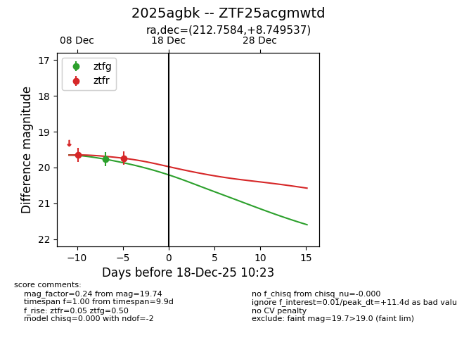
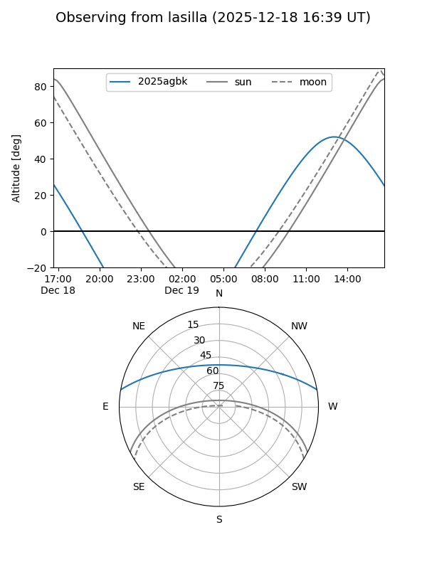
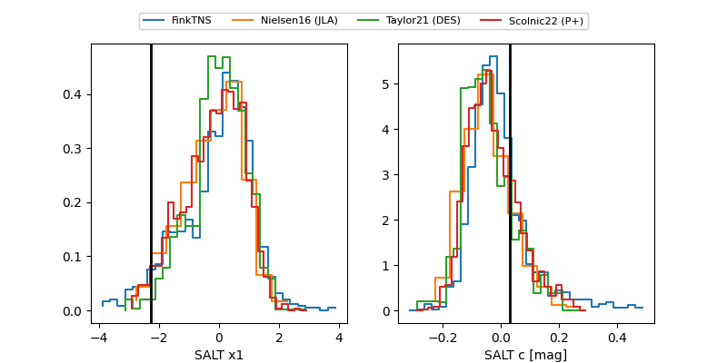

2025agbk
Target 2025agbk at 2025-12-18 16:02
Aliases and brokers:
FINK: fink-portal.org/ZTF25acgmwtd
Lasair: lasair-ztf.lsst.ac.uk/objects/ZTF25acgmwtd
ALeRCE: alerce.online/object/ZTF25acgmwtd
TNS: wis-tns.org/object/2025agbk
YSE: ziggy.ucolick.org/yse/transient_detail/2025agbk
alt names
ZTF25acgmwtd (ztf,fink_ztf)
2025agbk (tns,yse)
Coordinates:
equatorial (ra, dec) = 212.7584,+8.74954
equatorial (HMS+DMS) = 14:11:02.01,+08:44:58.33
galactic (l, b) = (352.3262,+63.69846)
Photometry
last ztfg=19.77, ztfr=20.15
1 ztfg, 3 ztfr detections
Lightcurve

Visibility


Additional plots
